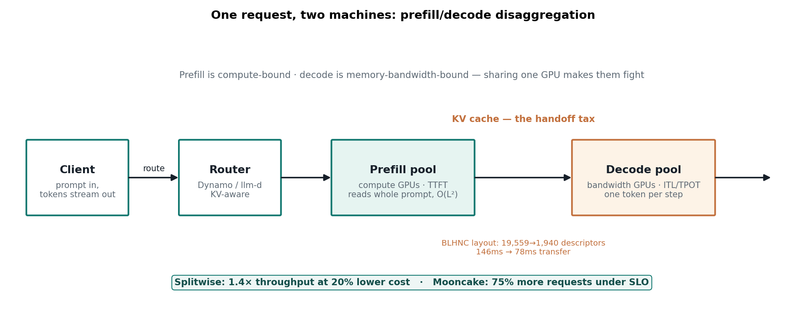
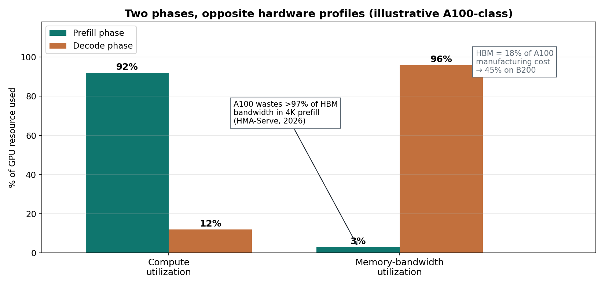
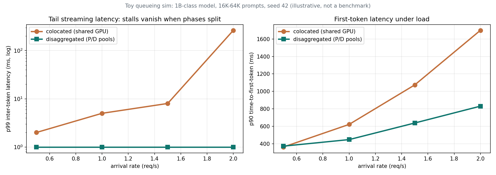
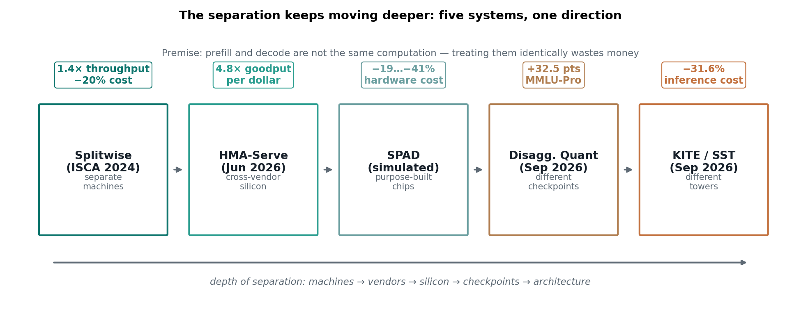

October 19, 2026 — AI infrastructure / LLM inference serving
On October 2, Prime Intellect launched Prime Inference, a serving platform for open models running on GB200 NVL72 racks. The stack is all open source — NVIDIA Dynamo, vLLM, Mooncake, FlashInfer — and it processed nearly a trillion tokens a day before launch. The headline engineering number: nearly 40% lower p90 inter-token latency, achieved by running prefill and decode on separate GPU pools.
The idea is two years old. Splitwise made the case at ISCA 2024. What's new is how far the split has gone: in September 2026, two papers pushed it inside the checkpoint and inside the model architecture itself. One request, two machines, two number formats, two architectures — joined at a single boundary called the KV cache.
ELI5: the two-stove kitchen
A restaurant has two jobs. The prep chef reads the entire banquet order at once — every ingredient, every allergy note — and does the heavy planning. The line cook plates one dish at a time, fast, in a rhythm.
Now give them one stove. Every time a banquet order arrives, the prep chef takes over the whole kitchen for ten minutes, and every plate in progress sits there getting cold. That's your LLM on a single GPU: the prompt-processing phase (prefill) freezes the token-streaming phase (decode), and your chat stutters.
The fix is two stoves. The prep chef gets the big burner — raw compute — because reading a whole prompt means comparing every token against every other token, and that math grows quadratically with prompt length. The line cook gets the fast conveyor — memory bandwidth — because plating one token means re-reading the entire recipe book (the model weights) from the shelf, every single step.
The tray passed between the stoves is the KV cache: the attention state built during prefill that every decode step needs. Passing the tray costs a little. The entire engineering art of 2026 is making that handoff tax tiny — Prime got a KV transfer down from 146ms to 78ms with a better memory layout alone.

How it works: one prompt, two jobs, one handoff
Prefill is compute-bound. It processes your whole prompt in one forward pass, builds the KV cache, and its attention cost grows with the square of prompt length. It sets time-to-first-token (TTFT).
Decode is memory-bandwidth-bound. It generates one token at a time, and each step reloads the model weights plus the growing KV cache from HBM. It sets inter-token latency (ITL) — the rhythm of the stream.
The profiles are almost perfectly opposite:

Run both on one GPU and they fight. A long prefill — common now that agent prompts run 100K+ tokens — stalls every streaming decode behind it. The damage shows up in the tail: most tokens look fine, then one freezes for the better part of a second. Chunked prefill (slicing prefills into small pieces interleaved with decode) softens this. Disaggregation removes it: the decode pool never sees a prefill at all.
I built a tiny queueing sim to show the mechanism — a 1B-class model, agentic-length prompts (16K–64K tokens), seed 42, clearly a toy:

At 1 request/second, splitting the phases cuts p99 inter-token latency 5.0ms → 1.0ms (5×), worst-case stalls 931ms → 1ms, and p90 time-to-first-token 622ms → 448ms. At 2 req/s the colocated p99 ITL blows out to 263ms while the split system stays at 1ms. The KV transfer costs 3–4% of TTFT — the tax is real but small, and it shrinks as prompts grow.
State of the art: five systems, one direction
An excellent recent survey traces five systems across the separation spectrum — from splitting machines to splitting the model itself:

Splitwise (ISCA 2024, Microsoft Research) — separate machines, identical model. The baseline: 1.4× throughput at 20% lower cost, up to 2.35× under the same power and cost budgets. Its key observation still holds: token generation doesn't need the latest GPUs' compute, so don't pay for it.
HMA-Serve (June 2026) — separate vendors. Tenstorrent Blackhole p150b cards (664 TFLOPS of BFP8, ~$1,300) run prefill; NVIDIA HBM GPUs run decode, with phase-wise quantization (BFP8 for prefill, BF16 for decode) and compute-transfer pipelining that overlaps KV egress with later prefill layers. Result: 3.2× goodput, 4.8× goodput-per-dollar on Qwen3 4B–32B with no quality loss. The economics: an A100 wastes over 97% of its HBM bandwidth during 4K-token prefill, and HBM is 18% of an A100's manufacturing cost — 45% on a B200. That expensive bandwidth is only useful during decode.
SPAD (Princeton/UW) — separate chips, designed from scratch. Cut HBM bandwidth 40% and prefill slows only 17%; cut compute 50% and decode slows only 22% — each phase tolerates losing the resource it doesn't use. Their prefill chip: 8% faster prefill at 52% lower cost; decode chip: 97% of decode performance at 28% lower TDP; cluster simulations show 19–41% lower hardware cost. Caveat, stated plainly: this is LLMCompass simulation, not fabricated silicon. Treat it as a bound, not a price list.
Disaggregated Quantization (Sept 22, 2026) — separate checkpoints. The core finding is an asymmetry: quantizing decode alone costs 2–4× the accuracy of quantizing prefill alone (7× on Gemma3-1B), because prefill wants fast low-precision math while decode just wants its weights loaded intact. Their QADD training produces an NVFP4 prefill checkpoint alongside a separate decode checkpoint: +32.5 points on MMLU-Pro for 1-bit GGUF compression of Qwen3.8-27B, without touching the decode checkpoint. A third trick streams prefill weights from SSD block-by-block, delivering 1.78× faster TTFT at 8K context.
KITE / Step Scale Transformer (Sept 23, 2026) — separate towers inside the architecture. A Prefiller tower builds the KV cache; a Decoder tower reads it; newly added capacity never participates in KV construction, so scaling the model stops scaling prefill cost. A 67B MoE version cuts analytical inference cost 31.6% versus a 63B classic Transformer at better quality. The motivation is the bill: on OpenRouter traffic (Aug 22–Sep 20), uncached input tokens exceed output tokens 16.29× for Claude Fable 5 and 14.64× for GPT-6 Astra — input charges are ~75% of the total. For agentic workloads, prefill is the cost.
The production proof: Prime Inference's GB200 numbers
Research is nice; production numbers are better. Prime's October 2 launch disclosed the tuning that actually worked on GB200 NVL72, targeting an agentic workload (6K new tokens on a 140K-token prompt per turn, benchmarked with SemiAnalysis AgentX):
- 1:4 prefill/decode ratio served the most users: 66 sessions per prefill group at 101 tokens/s per user
- DEP8 prefill topology: ~5× more usable prefix-cache capacity than TEP8 on the same hardware
- Smaller prefill budget (8K → 4K tokens/step): median queue wait 550ms → 110ms, median TTFT down ~20%
- NVFP4 KV compression: 576 → 352 bytes per MLA row; cached tokens per decoder 1.09M → 1.63M
- Native sparse-MLA kernel: 12.0μs vs 17.7μs staged vs 13.7μs FP8 at 15 query tokens
- BLHNC KV layout: transfer descriptors 19,559 → 1,940; mean transfer time 146ms → 78ms
The packaging matters too: llm-d (highlighted in a KubeCon China 2026 keynote) puts PD disaggregation behind Kubernetes objects, and GPU virtualization lets ~2× as many decode instances share one card for ~20% more cluster throughput. And the split is generalizing beyond prefill/decode — vision encoders are being disaggregated from LLMs, and MoE systems are splitting attention from FFN.
Takeaways
- One GPU per request is a compromise for both phases. The split is now standard infrastructure — NVIDIA documents it as an ordinary Dynamo configuration, and cloud providers list it as a baseline option.
- The separation keeps moving deeper: machines (2024) → vendors (mid-2026) → checkpoints and architectures (Sept 2026). The sharp question now: when the phases run on different silicon, in different number formats, in different towers — what does it even mean to serve "a model"?
- The handoff tax is the product. KV transfer engineering — NIXL, BLHNC layouts, Mooncake's DRAM tier, compute-transfer pipelining — decides whether the split pays. That tax is down to tens of milliseconds and falling.
- Prefill is the bill. Agentic traffic runs 14–16× input-heavy; every prefill optimization (budgets, prefix caching, NVFP4 KV, SST-style architectures) lands directly on cost.
- Don't bother at small scale. A well-tuned single pool on vLLM is simpler and fine for light traffic. Disaggregation pays when you serve one model at real scale with streaming SLOs your users can feel.